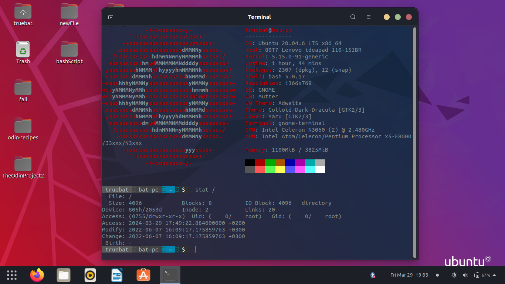

I started in 2021 by trying ubuntu on a virtual machine (virtual box). Then in Jul 2022 I installed ubutnu on an old laptop I had which made me notice how much faster linux is compared to windows.
My current set up is Arch with dwm because its super minimal